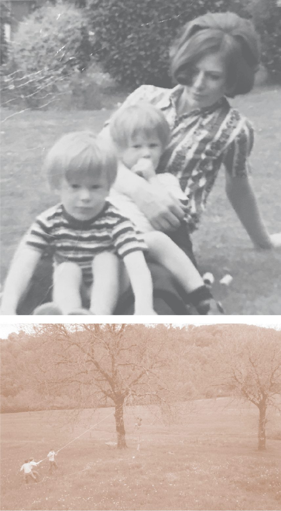

A restaurant built from memory.
Muse is Tom Aikens' return to experience-led fine dining: an intimate, 25-cover converted mews house where every menu traces the moments and people that shaped his life and his cooking.

A Georgian mews on Groom Place.
Muse opened in January 2020 and was awarded its Michelin star within the year. Grace Dent named it her opening of the year.
Two floors of a converted mews house, with an open kitchen and counter on the ground floor, a lounge, and a private dining room upstairs. Interiors are by Rebecca Korner of Körner Interiors, blending the classic and the avant-garde; the room won at the Restaurant & Bar Design Awards in 2021.
Raised in Norfolk. Trained in the hardest kitchens in Europe.
Tom Aikens is one of the most acclaimed British chefs of his generation. At twenty-six he became the youngest British chef to hold two Michelin stars.
His training ran through David Cavalier's in Battersea, Pierre Koffmann's La Tante Claire, Pied-à-Terre, and Joël Robuchon in Paris — kitchens that taught precision, and the discipline to let an ingredient speak. Raised in Norfolk, he has always cooked with fresh, local and sustainable produce at the centre.
Muse is his return to experience-led fine dining: a room small enough that he can cook for every guest, and a menu personal enough that he can tell them why.
“My mother taught me to bake when I was eight. My father taught me that a bottle of wine could be a map of somewhere. Everything else followed.”Tom Aikens



Where the menu begins.
Tom's mother, Tania, introduced him to the pleasures of food and taught him to bake from the age of eight. He and his twin brother Robert spent long afternoons picking fruit with her for jams and chutneys.
His father, who advised him in his early years in the kitchen, had built a life in the wine trade — and through it gave Tom an insight into the food heritage of France that first made him want to be a chef. Those two threads, the Norfolk kitchen and the French table, still run through every menu at Muse.
The people in the room.
Andrei Avrinte
Trained in the French tradition and in one- and two-Michelin-starred kitchens — contemporary cooking with Guillaume Sanchez, classical fine dining at La Chèvre d'Or, and a beginning under Thierry Breton in Paris.
Sébastien Pé
Trained in Belgium, then Paris from 2004 — the Four Seasons George V, Pavillon Ledoyen and Le Bristol — before eight years at The Five Fields in Chelsea. Your host from the first enquiry to the last glass.
Elisa Marchini
Grew up on her family's vineyard on the Tuscan coast. A protégée of Pierre Koffmann, with time at L'Atelier Robuchon. She writes the pairings and keeps the cellar.